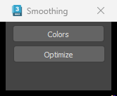

Smoothing
See smoothing groups as colours, and rebuild them with as few groups as possible.
What it does
The Smoothing panel is a small floating window with two buttons. Colors shows every smoothing group of the selected objects in its own colour. Optimize rebuilds the smoothing groups with the fewest groups, keeping every hard and soft edge exactly as it was.

How to use it
- Run the Smoothing macro (category 9000 Toolkit, no default hotkey). The panel opens where you left it. Run it again to close it.
- Select one or more objects (Editable Poly or Edit Poly).
- Click Colors to see the groups. Click it again to go back to how the objects looked before.
- Click Optimize to reduce the number of groups. At polygon or element level only the selected polygons are changed.
Options
| Button | What it does |
|---|---|
| Colors | Paints one colour per smoothing group on the selected objects. The button shows whether the current selection is showing colours. The colours update as you edit, including with hard-edge changes, Edge Marks and Max's own Edit Poly tools. |
| Optimize | Keeps every hard and soft edge and rebuilds the groups with the fewest possible. It never ends up with more groups than the object had. A message in the panel tells you the result. |
Make Hard and hard edges
The Edge Marks pie sets hard edges, creases and edge weights on the selected edges. At polygon level, Make Hard turns the outline of the selection into a hard edge using one clean smoothing group that no neighbour uses, so groups do not pile up. Hard per Face gives each polygon its own group. Both are a single undo step.
Hard edges are also what Hard edges from seams in the UV Toolbar creates: a hard edge on every UV seam, handy before baking.
Good to know
- Turning Colors on or off is one undo step. The colours are removed before you save, so the .max file never keeps them.
- With modifiers on the stack that change the polygons (Symmetry 9000, TurboSmooth and similar), a small modifier called SG Colors 9000 goes on top of the stack while Colors is on and paints the groups of the final result. It follows your edits, stays on top when you add modifiers, and disappears when you turn Colors off. It needs the SG Colors 9000 plugin loaded (restart Max once after installing). Without it a message in the panel says so.
- Optimize works on old meshes where polygons carry several groups, and rebuilds areas from their hard edges where that gives fewer groups.
- Optimize and Colors work on an object whose own vertex colours are in use: they never touch them.